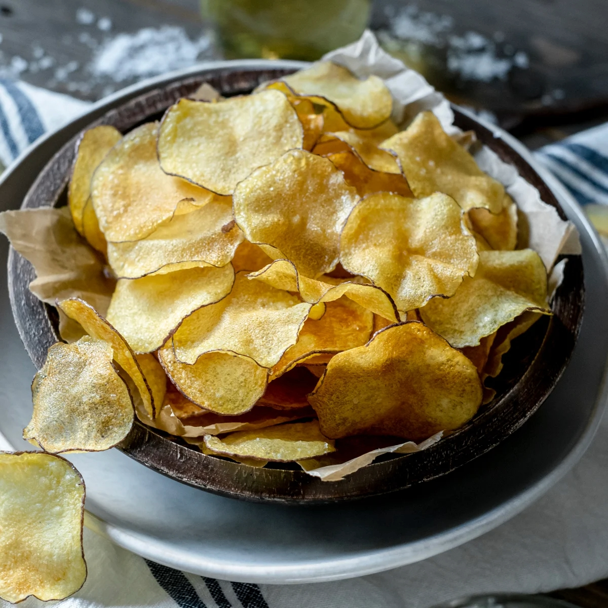

Homemade Potato Chips

A bowl of crispy, golden potato chips, perfectly salted and crunchy. These homemade chips are a delightful snack, ideal for any occasion.
Potato Chip Ingredients
- Potatoes (Russet or Yukon Gold)
- Vegetable Oil
- Salt
- Optional Seasonings (e.g., paprika, garlic powder)
Steps
To make homemade potato chips, follow these concise steps:
- Slice Potatoes: Wash and thinly slice the potatoes using a mandoline slicer or sharp knife.
- Soak Slices: Soak the potato slices in cold water for at least 30 minutes to remove excess starch.
- Dry Slices: Drain and pat the slices dry with a clean kitchen towel or paper towels.
- Heat Oil: Heat vegetable oil in a deep pot to 350°F (175°C).
- Fry Chips: Fry the potato slices in batches until golden brown and crispy. Avoid overcrowding the pot.
- Drain and Season: Use a slotted spoon to remove the chips from the oil. Place them on paper towels to drain excess oil, then season immediately with salt or desired seasonings.
- Cool and Serve: Let the chips cool slightly, then serve and enjoy!
Enjoy your fresh and crispy homemade potato chips!